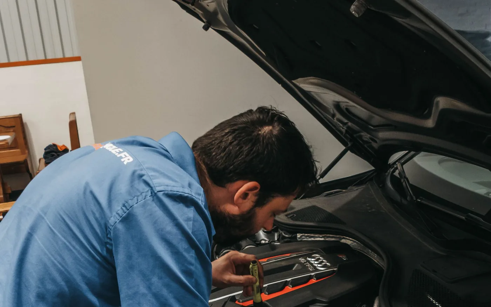
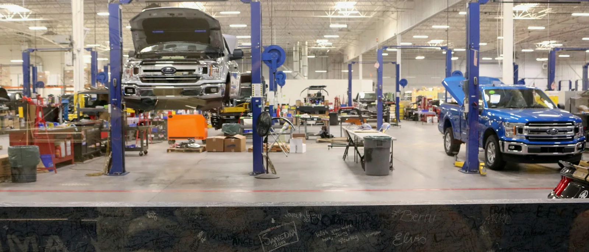

Was ein angenommener Anruf wert ist.
Weniger Support-Anfragen an Ihr Team. Mehr qualifizierte Leads.
LEISTUNG 02/07
Der Assistent springt ein, wenn niemand rangehen kann.
In der Räderwechsel-Saison nimmt niemand ab. Jeder verpasste Anruf ist ein Kunde, der beim nächsten Betrieb anruft.
Im handwerklichen Bereich des Kfz-Gewerbes fehlen laut ZDK rund 10.000 Fachkräfte. Die Telefonzentrale ist chronisch unterbesetzt.
Ein verpasster Anruf hinterlässt keine Spur. Ohne Aufzeichnung fehlt jede Grundlage, um das Problem überhaupt zu beziffern.
… dann sind Sie nicht allein. Und Sie sind genau richtig hier.
Wenn die Börse das schon macht
Seit Juni 2026 übernimmt mobile.de unbeantwortete Anrufe zu den eigenen Inseraten, kostenlos. Das ist ein gutes Angebot, und Sie sollten es nutzen. Es endet nur genau dort, wo Ihr Geschäft weitergeht: am Inserat.
Ein Assistent ohne Terminbuchung macht es schlimmer, nicht besser.
Mit Assistent steigt die Zufriedenheit mit der Erreichbarkeit von 66 auf 75 Prozent, der Anteil Unzufriedener fällt von 7 auf 3 Prozent. Das gilt aber nur, wenn der Assistent Termine buchen kann. Kann er es nicht, liegt die Unzufriedenheit bei 12 Prozent, also höher als ganz ohne Assistent. Deshalb bauen wir keinen, der nicht am Kalender hängt.
Quelle: TÜV NORD INSIGHT 2026, Befragung von 275 Autohäusern und 842 Autokäufern, Feldzeit 24.09. bis 14.10.2025.
In Stoßzeiten gehen Anrufe systematisch verloren: Serviceberater nehmen Fahrzeuge an, Verkäufer sitzen im Gespräch. Der verpasste Anruf ist die Inspektion, die bei der freien Werkstatt landet.
Beispielhafter Ablauf, keine Aufzeichnung eines echten Anrufs.

Weniger Support-Anfragen an Ihr Team. Mehr qualifizierte Leads.
Der Assistent hängt sich hinter Ihre Nummer, erkennt das Anliegen und schreibt den Termin direkt in Ihren Werkstattplaner
Ein Assistent lohnt sich, wenn Anrufe regelmäßig ins Leere laufen und Ihr Team am Telefon nicht hinterherkommt.
Fragen und Antworten
Die Einwände, die am Telefon zuerst kommen, und was wir darauf antworten.
Ihre Frage ist nicht dabei? Dann stellen Sie sie im Erstgespräch
Der verpasste Anruf ist die Inspektion, die woanders landet.
30 Minuten Erstgespräch. Kostenlos. Konkret.